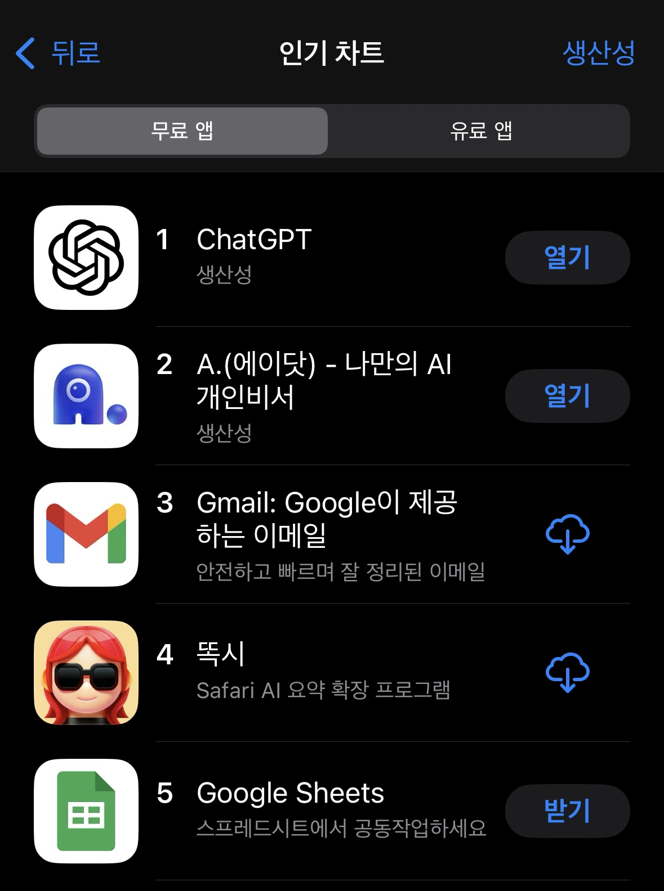
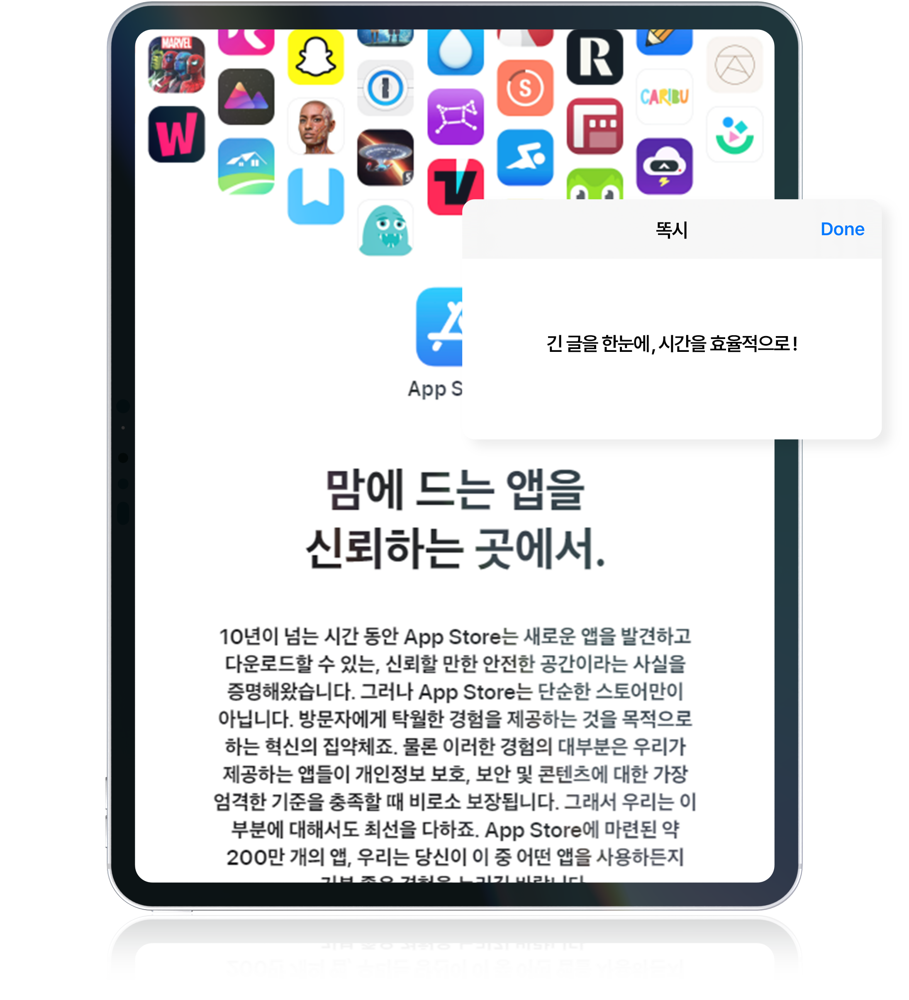
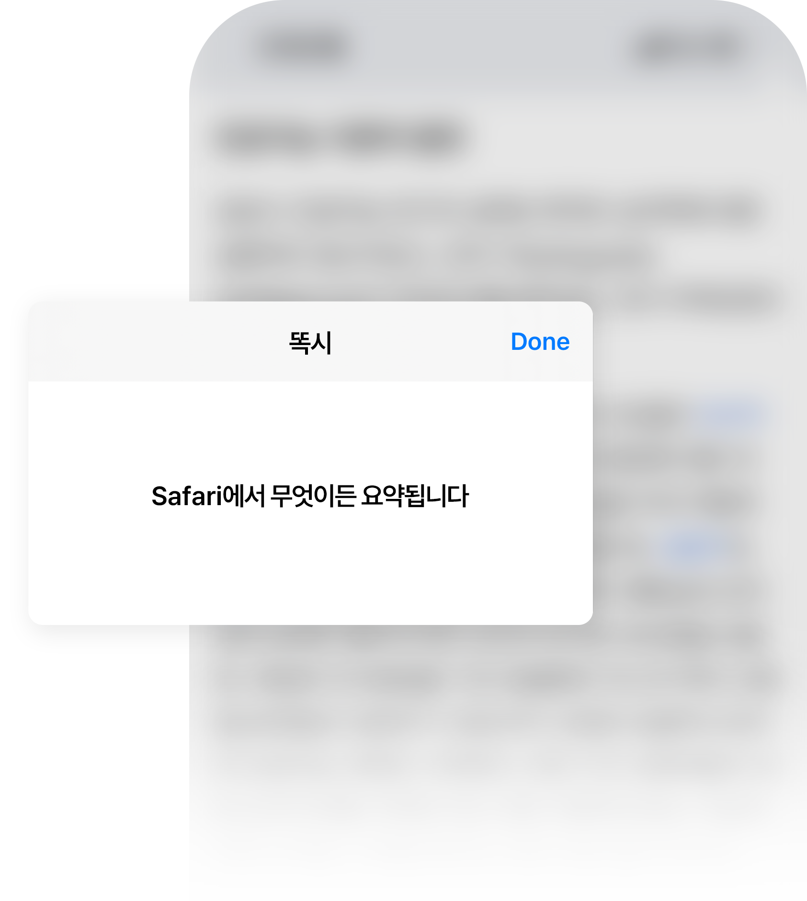
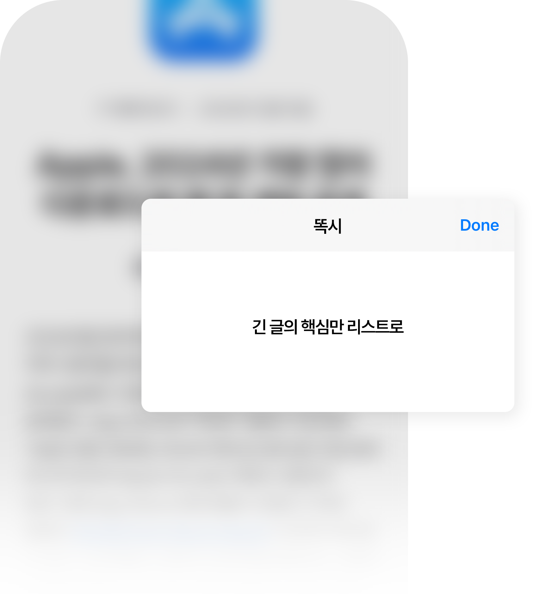
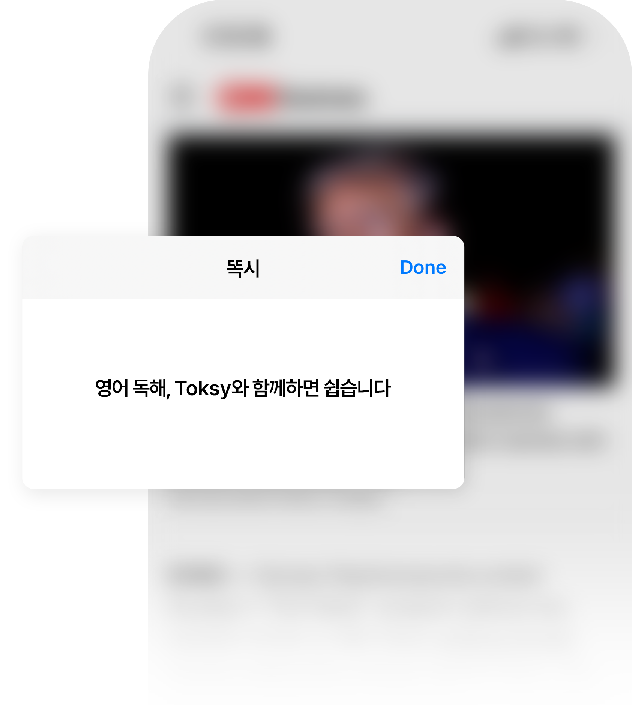
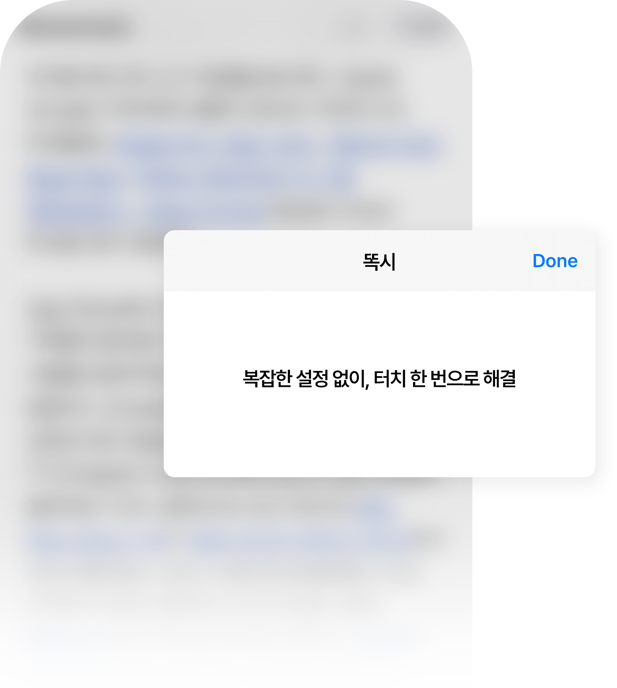
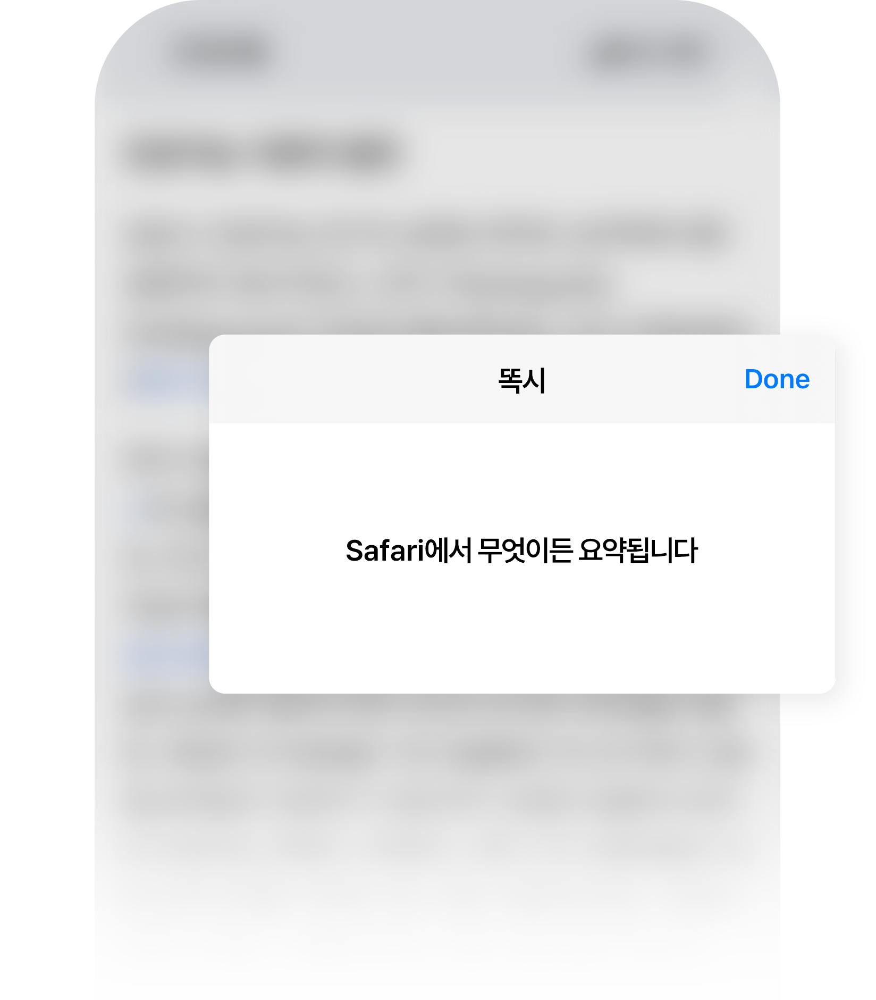
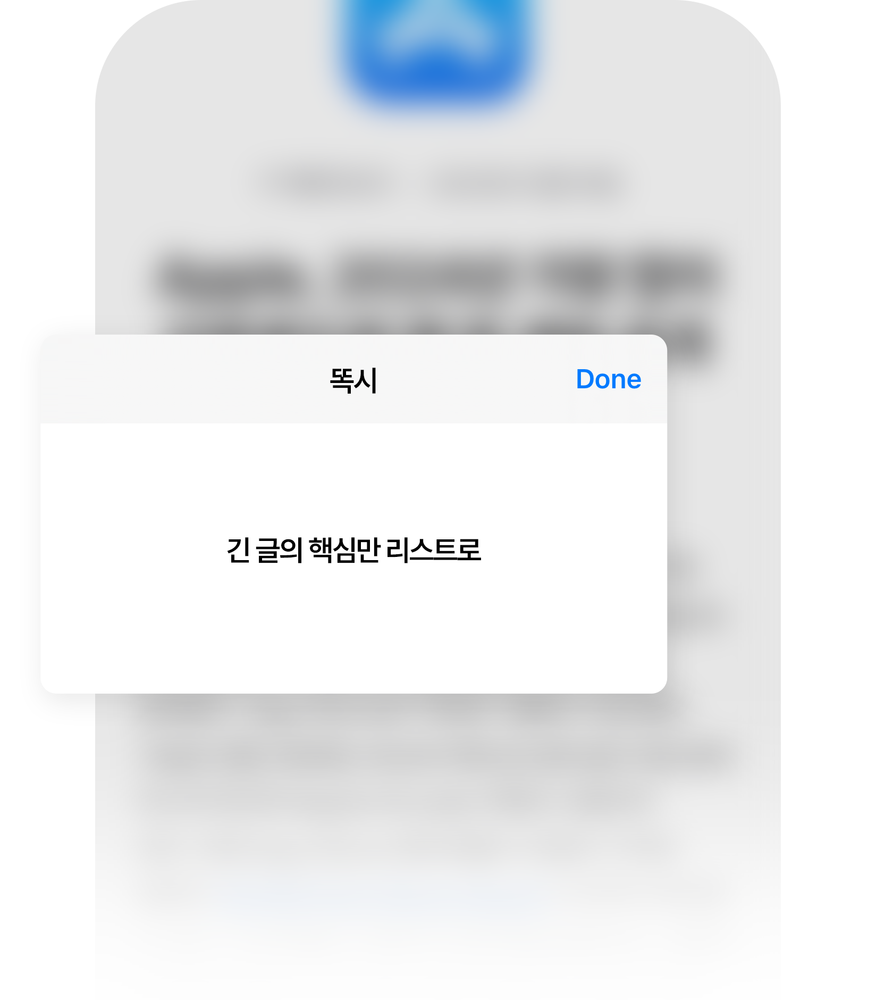
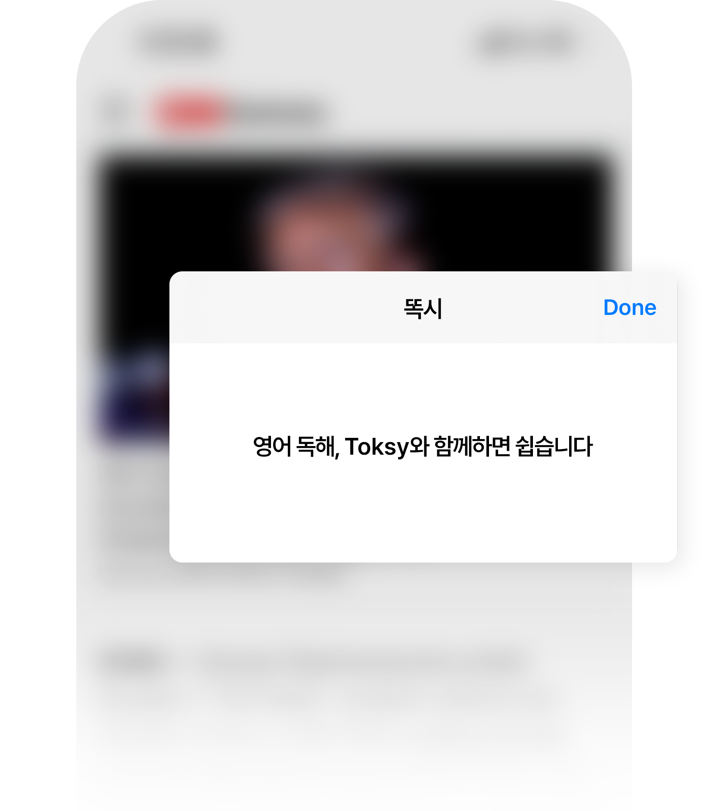
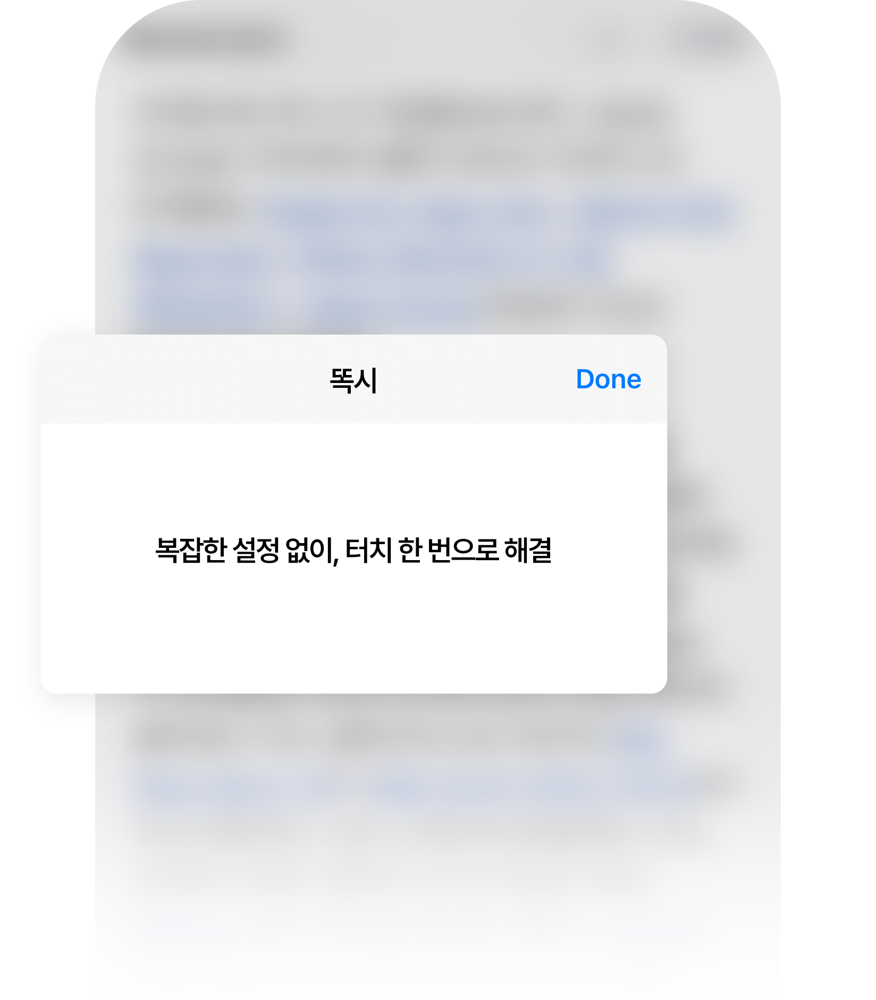

앱스토어에는 2백만개나 되는 앱들이 있습니다.
똑시가 출시이후 뜨거운 반응으로 대한민국 앱스토어에서 생산성부문 4위에 랭크되는 기적이 벌어졌습니다.
모두들 똑시를 좋아하나봐요.

복잡한 텍스트도 똑시라면 문제 없습니다.
긴 뉴스 기사, 업무 보고서, 이메일, 심지어 댓글까지!
AI 기반의 Safari 확장 프로그램으로 핵심만 간결하게 정리해 드립니다.
똑시와 함께 중요한 정보만 빠르게 파악해보세요.

똑시는 중요한 정보만 리스트로 깔끔하게 제공합니다.
장황함은 줄이고 가독성을 높여 핵심 파악이 더 쉬워집니다.
바쁜 업무 시간이나 짧은 여유 시간에도
핵심을 놓치지 않고 빠르게 이해할 수 있습니다.




영어 뉴스나 글, 아직도 어렵게 느껴지시나요?
똑시의 요약본을 읽고 나면 자신감이 생길 거예요!
요약된 내용으로 흐름을 잡고 원문을 읽어보세요.
원문이 쉽게 보이고, 영어 실력도 덩달아 성장합니다.




기기를 다루기 어려워하는 분들도 걱정하실 필요 없습니다.
똑시는 터치 한 번으로 원하는 글을 요약할 수 있습니다.
별도의 복잡한 설정이 필요 없는 심플한 인터페이스 덕분에
누구나 쉽게 사용하실 수 있습니다.